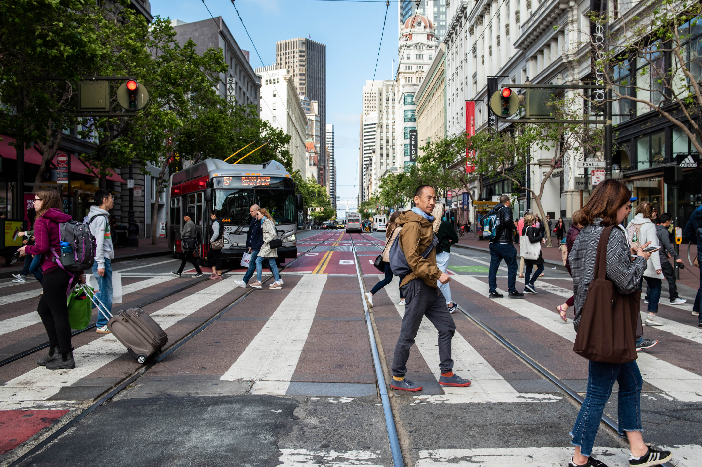
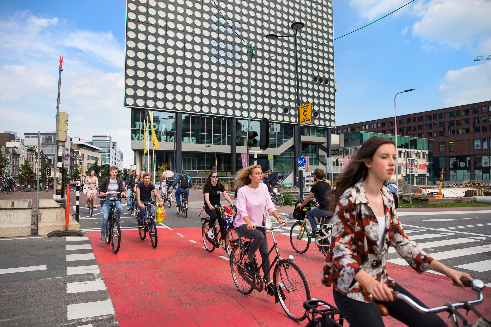

This website aims to teach people the ways in which life in cities and suburbs can be improved both both for people commuting between the two areas, as well as people living within them.
We can improve these things through the implementation of a robust public transit system, which includes infrastructure made for public transit use only, adoption of pedestrian friendly infrastructure such as refuge islands and raised crosswalks, as well as making places more available to people without the use of cars.
In depth information on these topics can be found in the sub pages located in the navigation bar.